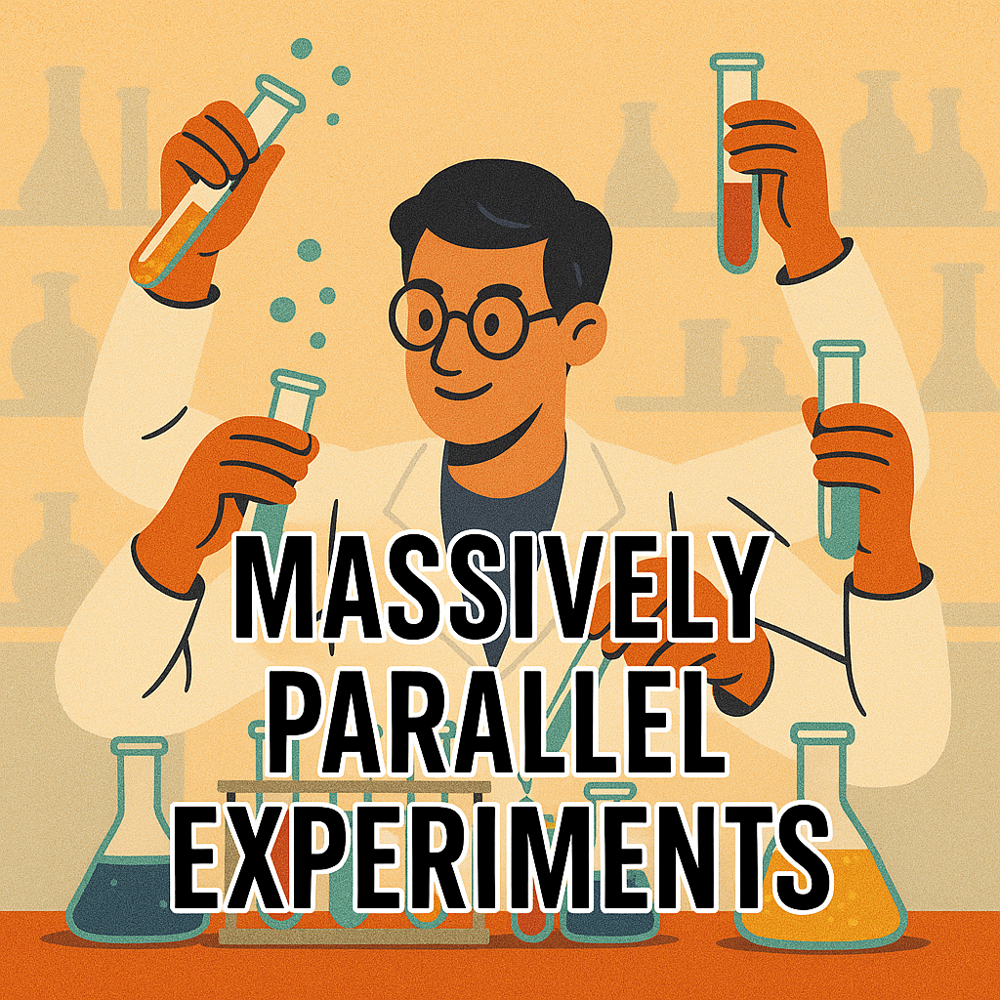
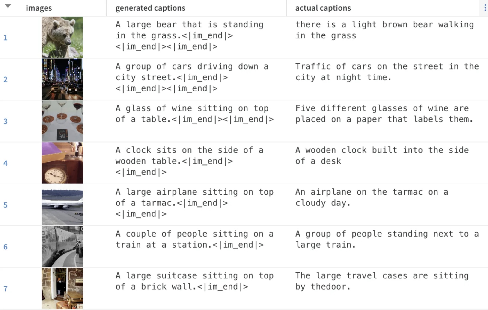

Massively Parallel Experimentation: Ship Better Models, Faster 🚀

In the world of machine learning, success isn’t just about finding the perfect model—it’s about running as many experiments as possible. Yet, I often see teams tweaking one model at a time (or worse, running everything in notebooks). This is fine if your model trains in minutes, but deep learning? That’s an hours-to-days kind of commitment. So, if you’re serious about getting your work production-ready, it’s time to level up.
And let’s be real—MLEs love debating whether Approach A is better than Approach B. I say, why argue when you can just test both? Code it up, run the experiments, and let the results speak for themselves.
And here’s a 🌶️ topic, notebooks. They’re great for cleaning and structuring data, but once you’ve got that sorted, it’s time to move on to Python files. This makes your project structured, reviewable, and way easier to collaborate on.
Structuring Code (Because Future You Will Thank You) 🛠️
Every ML project has three main phases:
- Data – Get your data cleaned and ready.
- Train – Build and test your model.
- Serve – Deploy it for real-world use.
For deep learning projects, I stick to the following file structure:
main.py– Orchestrates everything and provides a CLI interface.data.py– Handles preprocessing, PyTorchDataset, and collate functions. If things get messy, I split it into smaller files.model.py– Defines the model, taking a config that includes hyperparameters (base model name, extra hidden layers, etc.).trainer.py– Handles data ingestion, loss calculations, and logs key metrics (precision, recall, false positives).
This structure has served me well over the years, but feel free to tweak it to your needs.
Side Quest: Clean Code (Your Teammates Will Love You) 🧹
Before we go any further, let’s have a moment of appreciation for clean code. It’s not just about looking nice—it helps teams actually collaborate and ship faster. Here’s my personal checklist:
- Keep PRs short – Ideally <100 lines. Anything longer and reviewers start looking like this: Joma Tech video.
- Functions should be <15 lines – One function, one job.
- Inject dependencies – Pass objects into functions instead of creating them inside. This also makes writing tests so much easier!
- Files should be <150 lines – If a file is getting too long, refactor and break it up (
data.py→data_process.py,data_warehouse.py). - Name things well –
colour_image = image.convert("RGB")is way better thanimg = img.convert("RGB").
Of course, rules aren’t always absolute—just do your best.
Parallelising Hypotheses 🟰
At my previous workplaces we used Argo WorkFlows (ArgoWF) to send our models into training. This is an abstraction on top of kubernetes that has worked well for us. However, there are other platforms that does similarly well in this space including AWS Steps, Ray Anyscale, KubeFlow etc.
What is important here regardless of the platform is that you spam the platform with all your hypotheses. In order to do so you need to structure your code to handle these cases and log metrics so that you can compare. These metrics need to be able to choose a winner and therefore should be independent of which model type is being tests.
In order to do this I use two tools:
typer, a pretty cli tool for python that surpassesargparse.pydantic, for configurations and parsing in arguments from the cli.
Example:
class ModelConfig(pydantic.BaseModel):
vision_model_name: str = "edgenext_small"
embed_dims: int = 512
class TrainerConfig(pydantic.BaseModel):
is_local: bool = False
learning_rate: float = 1e-3
batch_size: int = 8
epochs: int = 2
_model_config: ModelConfig = ModelConfig()And within main.py I do:
import typer
app = typer.Typer()
@app.command()
def train(trainer_config_json: str = typer.Option("{}", help="Trainer config JSON string")):
if "HF_TOKEN" not in os.environ:
raise ValueError("Please set the HF_TOKEN environment variable.")
trainer_config = config.TrainerConfig.model_validate_json(trainer_config_json)
transform = vision_model.get_vision_transform(trainer_config._model_config)
train_dl, valid_dl = data.get_dataset(
transform=transform, tokenizer=tokenizer, hyper_parameters=trainer_config # type: ignore
)
model = vision_model.get_vision_model(trainer_config._model_config)
...
if __name__ == "__main__":
app()Local Execution: Sanity Check Before You Burn $$$ 💸
Before we spam our experimentation platform with costly experiments that require massive GPUs, it is important to get a subset working locally.
When executing locally, we do not need to run the full training load. We simply need to make sure that each component of the pipeline from data transformations, to the model, to the training logic, work end to end. Therefore pushing a few batches (but not simply one) over 2 epochs should suffice. I usually choose 2 epochs over 1 to make sure that I don’t see any funny errors popping up at the end of training.
I have logic in my training code similar to the following:
if trainer_config.is_local:
df = df.iloc[:200]
trainer_config.epochs = 2Tracking Experiments: Logs or It Didn’t Happen 👀
Logging is important so that we can compare each run. Whilst I generally use wandb, there are plenty of other commercial and open source alternatives available. As far as logging goes there are two things that are important:
- Log a metric that makes product sense.
- If your problem is based on images, text, or other media, log visual examples.
In terms of logging a metric, this cannot be simply the loss. Loss does not say anything about how “accurate” your model is. While precision and recall are good metrics to track, keep in mind that we can adjust precision at the expense of recall (and vice versa). When it comes to classification (multi-label or otherwise) average AUROC is a good metric. Keep in mind this was only an example of being creative with your metrics, and by all means adjust this to what makes sense.
At the end of training it is important to log the results of your model so that you can visually inspect the results. With a recent project that we did, we logged the false positives and false negatives. The surprising result that we observed was that the false positives were more often than not mis labelled as opposed to the model getting it wrong.
The following shows the results logged at the end of a captioning model.

Summary 🚀
- Run many experiments, not just one at a time.
- Move from notebooks to Python files once initial exploration is done.
- Structure your ML projects into data, train, and serve phases.
- Keep code clean and modular to boost collaboration.
- Use Argo Workflows (or similar) to parallelise training jobs.
- Always sanity check locally before running expensive cloud experiments.
- Log everything so you can compare and debug later.
Now go forth and experiment! 🚀